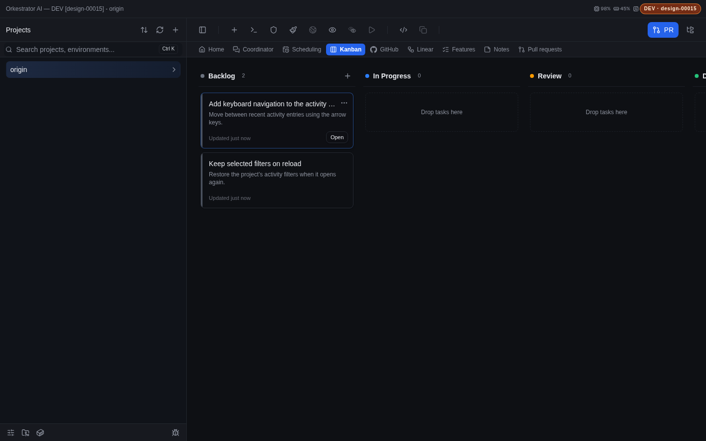
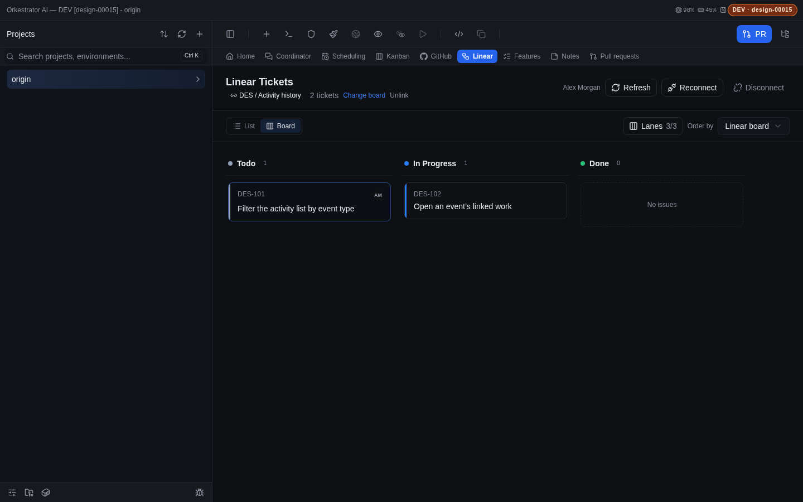
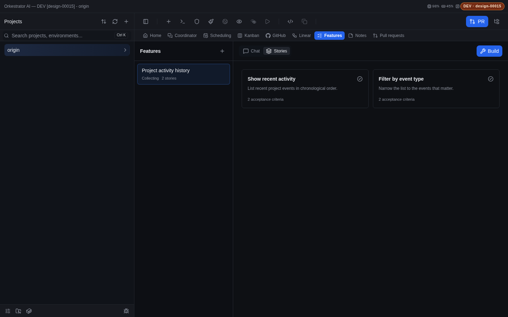
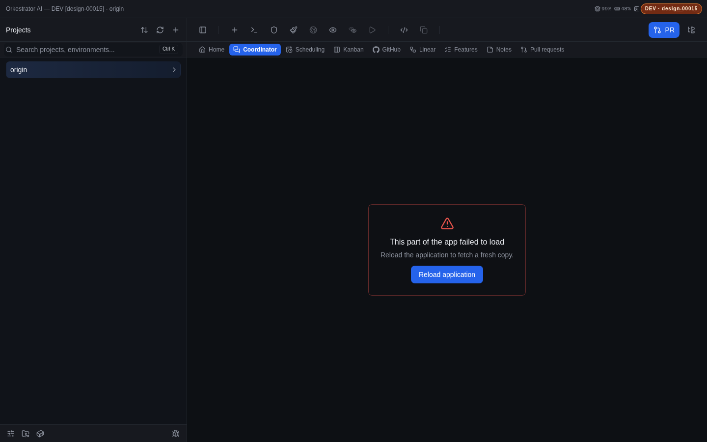
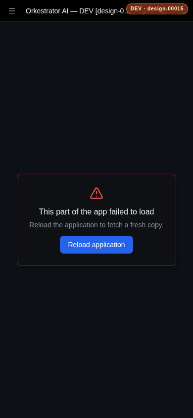

Design tasks / 00015
00015 · Remove resting and hover shadows from cards in the work
Problem
hover:shadow-md on Kanban cards, Linear issue cards and GitHub issue cards,
shadow-sm plus hover:shadow-md on feature cards, and
shadow-xl or shadow-lg on inline error cards and the design frame.
There are 92 shadow classes in total; most are legitimate (inputs, menus, toasts).
Find every instance
grep -rnE --include=*.tsx "\bshadow-(md|lg|xl|2xl)\b" apps/web/src | grep -v "\.test\."Scope
| Where | What |
|---|---|
apps/web/src/components/kanban/KanbanCard.tsx:278 |
hover:shadow-md |
apps/web/src/components/linear/LinearIssueBoard.tsx:141 |
hover:shadow-md; :154 is a dragged card, which floats and may keep its shadow |
apps/web/src/components/github/GitHubIssueCard.tsx:85 |
hover:shadow-md |
apps/web/src/components/kanban/FeaturesView.tsx:1061 |
shadow-sm and hover:shadow-md on cards |
apps/web/src/components/LazyLoadBoundary.tsx:144,183,243 |
inline error and loading cards |
apps/web/src/components/design/DesignFrameView.tsx:394,409 |
frame shadows on the design canvas |
apps/web/src/components/graph-designer/GraphPalette.tsx:58 |
palette: floats over the canvas, probably keep |
apps/web/src/components/settings/machines/MachinesSettings.tsx:717 |
dragging row: floats, keep |
Approach
- Classify each hit in Notes: floats (menu, toast, dock, dragged item: keep), or in the work (remove).
-
Replace card hover shadows with a border-color or tone change (
hover:border-primary/50is already present on the Kanban and Linear cards). - Record the treatment of full-page load failures in Notes.
Decisions
One option is marked recommended. Record the option you chose in Notes.
Design frames on the design canvas
Required evidence: before and after
Every slot needs a before image (captured first, before editing any code) and an
after image. Use the same profile, fixture data, theme, viewport and zoom for both.
Save PNGs under design/images/00015/ using the exact file names shown. See
How to capture.
Kanban card on hover desktop 1440×900
Hover a card on the project board.

Linear issue card on hover desktop 1440×900
Open the Linear board with fixture issues if available; otherwise capture a GitHub issue card.

Features view cards desktop 1440×900
Open the features view with some cards.

Load-failure card desktop 1440×900
Force a lazy import failure.

Load-failure card narrow 390×844
Force a lazy import failure.

Out of scope
- Modals, menus, popovers, toasts, the compose dock and floating notices.
Verification
mise run test:logged -- --name web-typecheck -- bun run --cwd apps/web typecheck
NODE_ENV=test mise run test:logged -- --name kanban -- bun --cwd=apps/web test src/components/kanban --parallel=2 --only-failures
mise run format:check
mise run lint
React tests in this repo need NODE_ENV=test in build shells. Real-browser
check: use a throwaway dev:test profile named design-00015, never
a production instance.
Acceptance checklist
-
Before images captured on unmodified code for every slot below, and committed
under
design/images/00015/. - After images captured after the change, with the same profile, data, theme, viewport and file names, and committed beside the before images.
- Every image slot on this page shows a picture (the evidence badge reads “10 / 10”).
- I have looked at each pair and written what changed, and anything that did not change that should have, in Notes.
- Hits were classified in Notes, and each decision below is recorded with the option chosen.
-
Type-check and the owning tests pass (commands below);
mise run format:checkandmise run lintpass. - The browser check includes a page reload and, for layout-affecting changes, the narrow viewport.
- DESIGN.md or PRODUCT.md updated if needed: Record any accepted exception (design canvas frames) in Elevation & Depth.
- Status set to Done on this page and in the index.
Notes
Shadow classification
- In the work. Removed resting and hover shadows from the Kanban, Linear, GitHub issue and feature story cards. Their existing hover borders and card tones distinguish them from the board.
- Load states. Flattened the inline and full-page failure cards and the dialog loading indicator. The failure border and loading hairline mark the status surfaces. The full-page scrims still separate those states from the underlying view.
- Floating. Kept the shadows on Kanban, Linear and GitHub drag previews, the machine row while dragging, the Linear board action bar, the graph palette and both live and placeholder design frames. Menus, dialogs, toasts, popovers, compose docks and floating notices are outside the card change.
Decisions
-
Kept the recommended floating-window treatment for design frames. The existing
shadow-xlseparates full pages from the canvas, including when a frame shows its placeholder. The exception is recorded in Elevation & Depth. - Chose a flat full-page failure card. The scrim already separates the failed view from the app underneath, and the destructive border gives the message a clear edge. Keeping the shadow would add a second depth cue.
Before and after
Playwright captured all five pairs in the same isolated headless
design-00015 profile, with the same dark theme, fixture data and scale factor
of 1. The baseline used unmodified renderer code at b2c91abb9. Kanban and
feature data came from the fixture backend. Playwright supplied the external Linear and
GitHub read responses.
The fixture profile ran headlessly with host seeding, agent credentials and the Docker host reachability probe disabled.
- Kanban hover. The hovered backlog card loses its shadow and still has a blue border, a toned surface and the Open action.
- Linear hover. The Todo card keeps its blue hover border and status edge. The resting card in the next lane also sits flat.
- Feature stories. Both story cards use their existing hairlines at rest. A hover check also confirmed the blue border on the first card.
- Desktop load failure. Blocking the lazy project workspace import leaves a flat error card centered in the workspace, with the destructive border and Reload application button visible.
- Narrow load failure. The same error fits within the 390px viewport, with the border and reload action visible.
The browser check confirmed that the GitHub hover border still appears and that the full-page settings loading and failure cards are flat. Reloading recovered the project workspace at both widths once the import was available and restored the seeded ticket and stories on desktop.